Nintendo considers preventing users from creating inappropriate UGC to be a foundational tactic for avoiding unintended outcomes when exchanging UGC. There are various approaches you can take. For example, when users create UGC, you can instruct them not to include inappropriate content or personal information in it. Or, you can have a system-based method or other methods to check for inappropriate content. Below we use examples from released applications to introduce five ways of handling UGC.
Giving "prior explanation" means explaining to the user that the UGC they create may be seen by other users before that UGC is actually exchanged. The purpose of giving prior explanation is to deter users from creating UGC that includes offensive content or personal information they do not want to make available to others. Also note that some users may be upset if they suddenly start receiving UGC without any warning, even if there is nothing wrong with the UGC itself. This means that for some types of UGC, our example applications give prior explanation not only before sending UGC, but also before receiving it.
★ See Examples of notifying users before the exchange of UGC for how some released applications have handled this.
"Profanity-checking" refers to checking text exchanged with other users against a list of profanity (specifically, lists of offensive words set by Nintendo), and ensuring that any profanity found is not displayed to other users. Checking for profanity prevents other users from receiving offensive words. Released applications implement several ways to prevent profanity from being displayed to other users. One method is to replace profane words with different non-profane words; another is not allowing the user to proceed to the next scene as long as profanity is still present in text they have entered. Different applications use whatever method is best suited to their design.
Note that on Nintendo Switch, your application is required to check text-based names for profanity. (See Restricting the display of profanity in text-based names exchanged with other users.) Use the nn::ngc library to perform the profanity check.
Your application can check for profanity at two points: either before sending text, or after receiving text. However, if the sender and the recipient use different UI languages, the library checks against different lists of profanity depending on whether it runs on the sender side or recipient side. This means that the library may detect different profanity depending on when you perform the check.
| Timing of profanity check | Default profanity lists used | Example of user experience |
|---|---|---|
| Before sending text | Profanity lists corresponding to the sender's UI language | Sender can edit text to remove profanity before sending the text |
| After receiving text | Profanity lists corresponding to the recipient's UI language | Profanity in the recipient's UI language is hidden or masked so recipient cannot read it |
Check for profanity at any of the following points in your application.
You are also free to add other languages' profanity lists to the check, in addition to checking the default lists that correspond to the UI language. For details, see the "Features > System > NGC Library" section of the NintendoSDK Documents.
★ See Examples of checking text for profanity for how some released applications have handled this.
Allowing users to exchange UGC anonymously may encourage the exchange of offensive or illicit UGC. Additionally, if unintended outcomes result from UGC exchange, finding a proper resolution is difficult when the sender cannot be identified. To prevent these situations, our example applications either display information that can identify the user who sent a given piece of UGC, or embed that information into the UGC data itself.
If your application includes UGC sender information, Nintendo recommends displaying the information rather than embedding it. This is because displaying the sender information serves as a more effective deterrent to creating inappropriate UGC.
★ See Examples of displaying or embedding the UGC sender's information for how some released applications have handled this.
Even if the content of voice chat is not inappropriate, having another user suddenly attempt to engage in conversation is an undesirable user experience and could lead to unintended outcomes. For this reason, in our examples, the applications that offer voice chat disable the feature by default until the user explicitly enables it.
For Nintendo Switch, Nintendo plans to provide a comprehensive overall system to support voice chat features. This system includes a feature to disable voice chat by default.
If you are considering the use of voice chat features in your application, contact Nintendo.
★ See Examples of disabling voice chat by default for how some released applications have handled this.
Our example applications set penalties for UGC that users or moderators have judged to be inappropriate, and for the creators of that UGC. Making it clear to users that penalties exist may be expected to have a deterrent effect on the creation of inappropriate UGC.
★ See Examples of applying penalties to discourage users from creating inappropriate UGC for how some released applications have handled this.
There are other means of conveying this information beside displaying it in a message; you can also design the names of your settings, menu options, modes, or similar labels in such a way that they convey to the user that UGC will be sent or received. Some of the examples below convey this information in a way that is specially customized to the application's design.
| Example | Description of example | Types of UGC | |
|---|---|---|---|
|
Nintendo presents: New Style Boutique 2: Fashion Forward (NOE) for Nintendo 3DS Swapping rooms
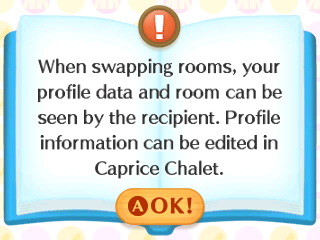 |
The following explanation is displayed in the sequence where users send their profile data and room, bundled together in a single unit.
This message makes it clear that another user will receive the UGC via communication, and that the UGC being sent is your profile data and room. |
Text, images | |
|
Mario Kart 8 for Wii U Creating a tournament (NOE version)
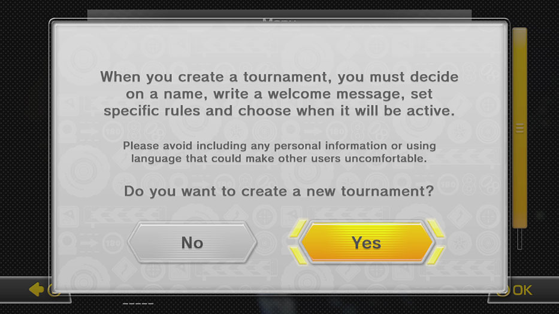 |
In this scene, the user is setting up a tournament in which users compete over the Internet. After the user reads about creating tournaments, the application displays the following message.
This message makes it clear that the UGC being made available to other users is the tournament name and welcome message (text). The message also includes caution text. "No" is selected by default, which prevents users from accidentally skipping over this dialog if they are button-mashing. This explanation is displayed to users every time they create a tournament. |
Text | |
|
Devil's Third for Wii U Text chat
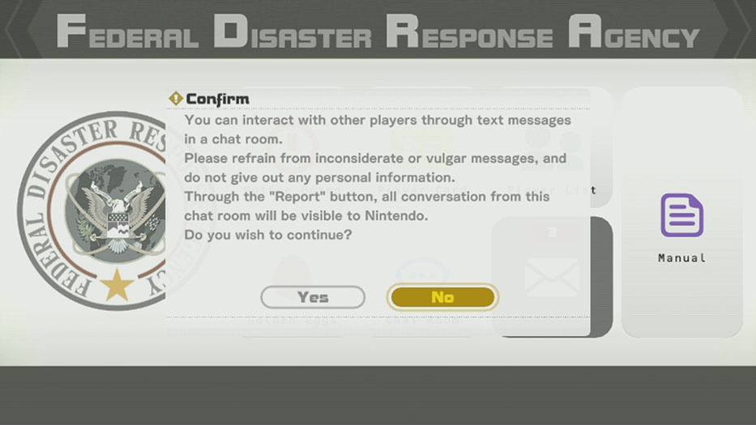 |
The application displays the following message before the user enters the chat room.
This message makes it clear that the UGC being exchanged with other users is text messages. The message also includes caution text. Note that in this case, a chat log is saved, and the message asks for user consent for Nintendo to view the log if a player reports it. |
Text | |
|
Super Smash Bros. for Wii U Voice chat
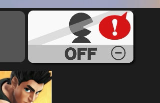 |
This button allows the user to use voice chat when playing online with friends. This button lets the user toggle voice chat on or off at any time. It is off by default. Because selecting this button to turn on voice chat is considered equivalent to giving consent to exchange UGC via voice chat, the application does not display a separate message to give prior explanation. The speech bubble with the exclamation mark indicates that one or more peers have turned on voice chat (that is, they want to talk with everyone). |
Audio | |
|
Animal Crossing: Happy Home Designer for Nintendo 3DS Posting screenshots to Miiverse
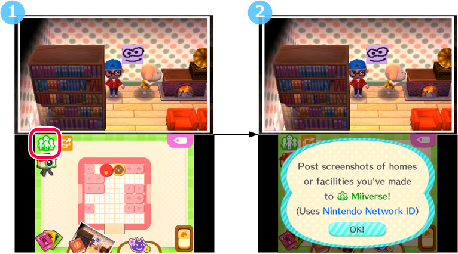 |
This is a scene of a user taking a screenshot of freely-arranged parts inside a house or facility, and posting the screenshot to Miiverse. By explicitly providing a Miiverse icon, the application conveys to the user that selecting the icon will transition the application to a Miiverse-related mode. In addition, the first time the user selects this icon, the application displays the following message to explain that this operation calls the posting applet.
After the user selects OK!, the Miiverse posting applet is displayed. The user can cancel the post by selecting Cancel in the posting applet. |
Images | |
|
Wii Sports Club for Wii U Initial startup
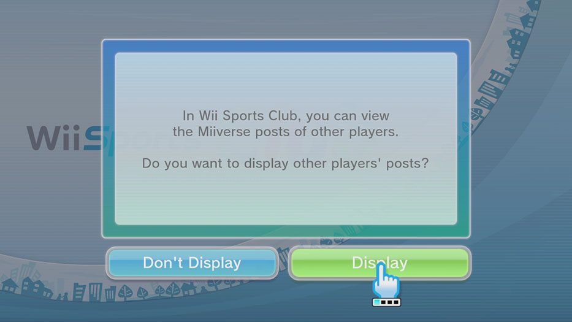 |
This application displays the following message the first time it is started by a given account.
This message makes it clear that the UGC being exchanged with other users is Miiverse posts. These messages are displayed only when the application is started for the first time by the account to which the user is currently logged in. The setting to display or not display these messages can be changed afterwards. |
Text, images |
As shown above, there is more than one way of giving prior explanation. Some applications convey the information by displaying a single message, but others convey it pictorially with icons or even use an in-game character to explain it. In Animal Crossing: Happy Home Designer for Nintendo 3DS, the application conveys this information beforehand by using an in-game character's dialogue to explain that the user can arrange furniture inside houses and facilities and then exchange the houses and facilities with other users (images, maps made by combining preset parts).
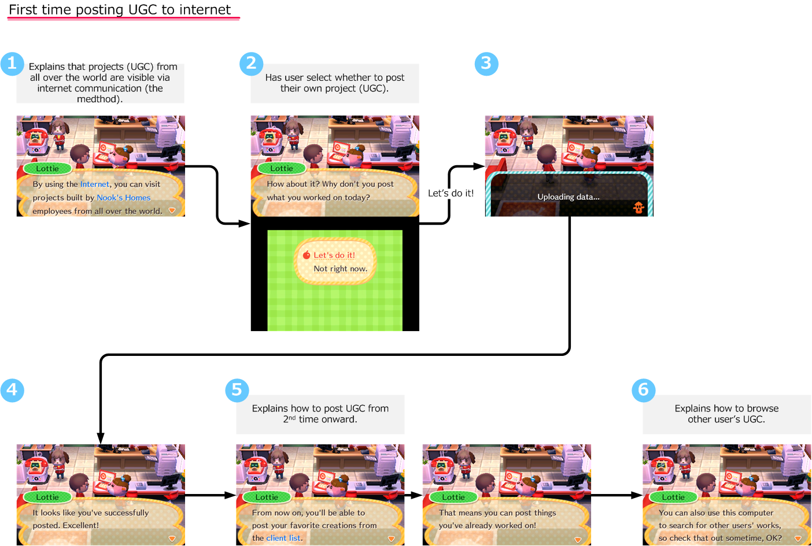
Also note that because this application gives a very thorough explanation prior to the first exchange of UGC, and because it implements a reporting feature, from the second time onward it gives a minimal explanation.
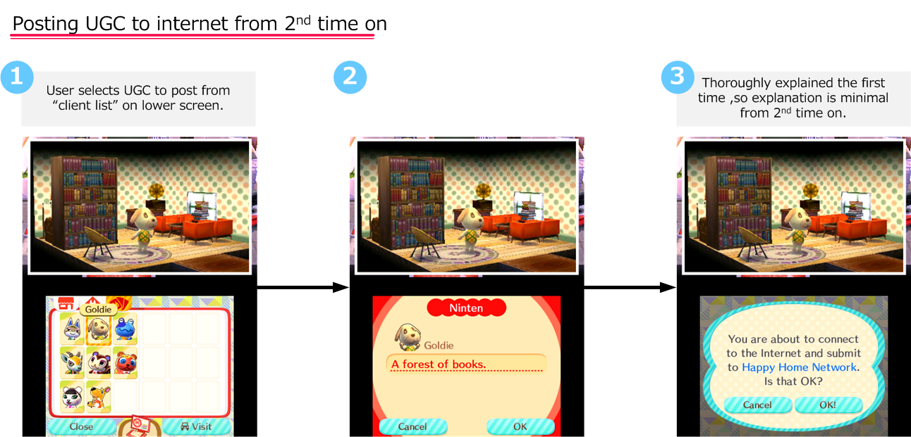
In this way, the application deters the creation of inappropriate UGC by conveying to the user what UGC is exchanged and what operations trigger the exchange.
Note: This document has omitted several lines of dialogue from the actual explanation sequence as it appears in the game.
|
Example
|
Description of example
|
Types of UGC
|
|
|---|---|---|---|
|
Animal Crossing: Happy Home Designer for Nintendo 3DS Scene where user inputs names
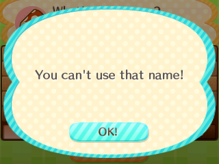 |
In this scene, the user enters their player name. After the user confirms the name they have entered, this application performs a profanity check. If it finds that the name includes profanity, it displays the following message and returns the user to the scene where they entered the name.
Because the user cannot progress in the application as long as the name contains profanity, it is not possible for profanity to be displayed to their peers. |
Text | |
|
StreetPass Mii Plaza for Nintendo 3DS Scene where users check Mii characters encountered via StreetPass
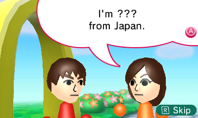 |
In this scene, Mii characters received via StreetPass introduce themselves. If a Mii nickname contains profanity, its nickname is replaced with "???" and displayed that way. | Text | |
|
Fire Emblem Fates for Nintendo 3DS Scene where user inputs player character's name
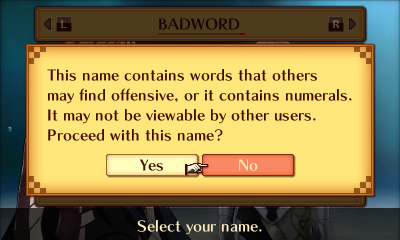 |
In this scene, the user enters a name for their player character. After the user confirms the name they have entered, this application performs a profanity check. If it finds that the name includes profanity, it displays the following message.
If the user agrees, they can set their character's name as one that includes profanity. When this application displays names to peers, it replaces any profane names with a default name and displays that instead. |
Text |
|
Example
|
Description of example
|
Types of UGC
|
|---|---|---|
|
Flipnote Studio 3D for Nintendo 3DS Flipnote information
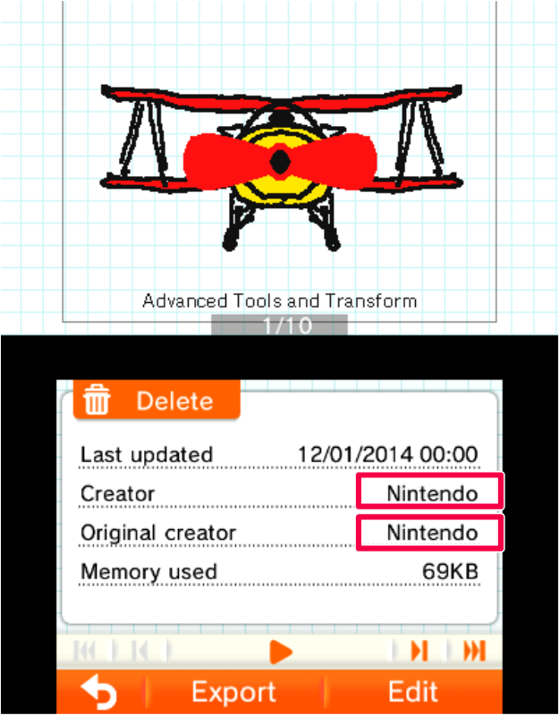 |
In this application, the names of the creator and the original creator are saved and displayed on every flipnote. (In this example, both names are "Nintendo".) The creator name can be changed from within the application, but creator information is managed on the server. As a result, this application's developer can still identify the creator even if the creator name is changed. | Video (flipnotes can use photos, so they may contain camera data) |
| Example | Description of example | Types of UGC |
|---|---|---|
|
Super Smash Bros. for Wii U Voice chat
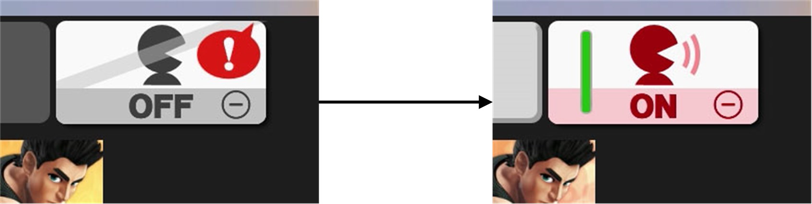 |
This application allows users to voice chat in the scene where they choose their players characters for online multiplayer. Voice chat is initially disabled, but users can enable it by tapping the voice chat icon (depicted in the example) and then voice chat with their peers. In the icon on the left, the speech bubble with the exclamation mark indicates that one or more peers have turned on voice chat (that is, they want to talk with everyone). |
Voice chat |
| Example | Description of example | Types of UGC | |
|---|---|---|---|
|
Super Mario Maker for Wii U When the user accesses "Course World"
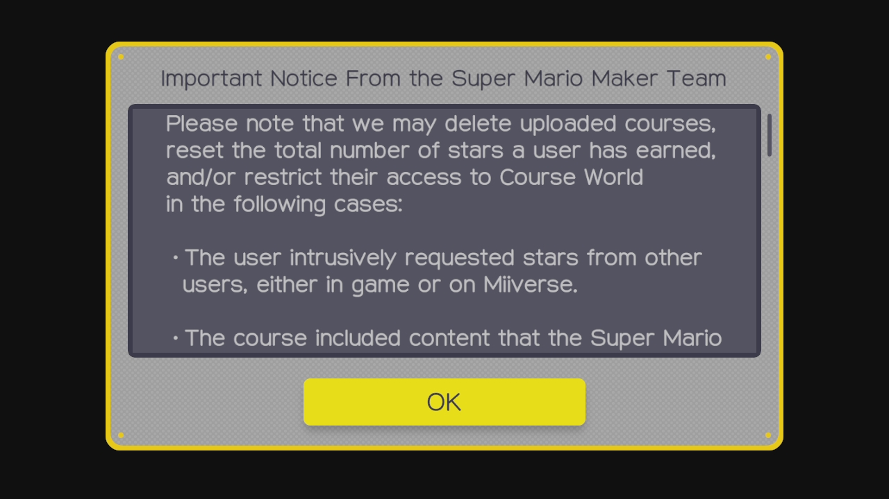 |
Before the application transitions to a mode where the user can browse UGC uploaded to the server, it explicitly states that creators of UGC that violates the rules are subject to penalties, as shown below.
The penalties can consist of deletion of all courses (stages made by combining preset parts) posted by the user, deletion of all stars received by the user (the more stars you receive, the more courses you can post), and restrictions on connecting to Course World, the server where users upload courses. In some cases inappropriate courses are found by admins who are moderating courses, and in some cases they are reported by users. |
Stages made by combining preset parts | |
|
Devil's Third for Wii U Reporting participants in text chat
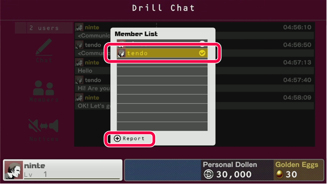 |
If the user finds another player in the chat room offensive, they can select that offensive player (in this figure, "tendo") from the chat room's Member List and then tap Report. This reports the offensive player and also allows the user to provide their reason for the report. The admins receive the report, check the reported reason and the chat log of the reported player, and ban the player if they feel it is warranted. (Because conversation in this chat room is saved as a chat log, it is possible for the publisher to trace back chat comments when they receive a report.) Banned players are no longer able to use the online modes of this application. As shown in Examples of notifying users before the exchange of UGC, this application makes it clear to users that there is a reporting feature before they enter the chat room. |
Text chat |
CONFIDENTIAL